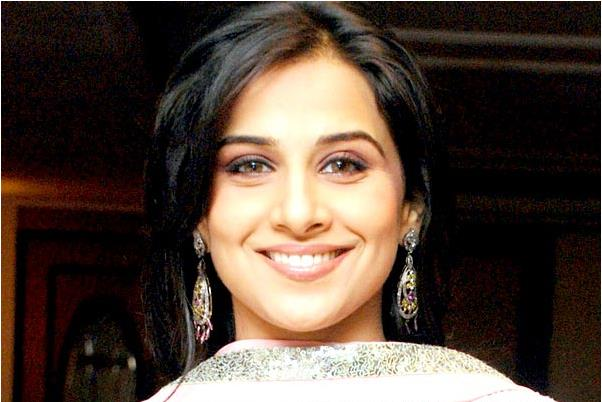

Vidya Balan Is Not Pregnant!Vidya Balan put all rumour to rest by making it clear that she is not pregnant and has no plans of going the family way this year at-least since she has committed to many movies and cannot leave producers in a lurch. Not long ago, it was reported that Vidya Balan has been visiting a specialty clinic in Mumbai. Though details were not disclosed, there was a buzz that Vidya Balan is pregnant. While talking about her next release Shaadi Ke Side Effects opposite Farhan Akthar, Vidya Balan said that her husband and UTV head Siddharth Roy Kapur is extremely non-judgemental and totally understands the demands at work. She then added, "And to put the record straight, I am not pregnant. I cannot even think of starting a family this year because I have my work commitments and it would be unprofessional on my part to commit to my producers and then back out. |